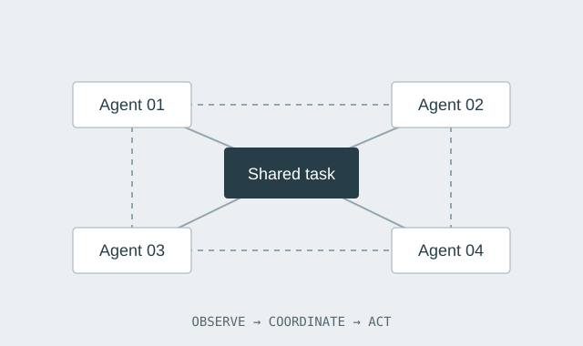
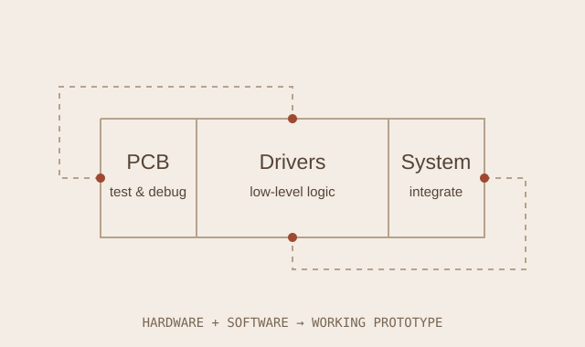

EMBODIED INTELLIGENCE
EMBODIED INTELLIGENCEQuadruped navigation
PPO policies for obstacle avoidance and path planning on varied terrain, from simulation to deployment on real robots.
13th in semifinals · 25th in finals
View projectENGINEERING / SELECTED PROJECTS
From training a policy to getting a system to work in the real world.
EMBODIED INTELLIGENCEPPO policies for obstacle avoidance and path planning on varied terrain, from simulation to deployment on real robots.
13th in semifinals · 25th in finals
View project
MULTI-AGENT SYSTEMSIndependent development across two competition tracks, exploring intelligent games and collaborative control.
Third prize in both tracks
View project
EMBEDDED SYSTEMSEmbedded hardware development, PCB debugging, low-level drivers, and hardware–software integration.
Merit Award
View project